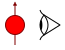
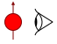

Aimantation longitudinale
Suite à l'impulsion RF, observez le comportement de l'excès de spins. C'est la relaxation spin-réseau.
T1 du tissu :
Impulsion RF :
Basse énergie : Haute énergie : Opacité :
Suite à l'impulsion RF, observez le comportement de l'excès de spins. C'est la relaxation spin-réseau.
T1 du tissu :
Impulsion RF :
Basse énergie : Haute énergie : Opacité :